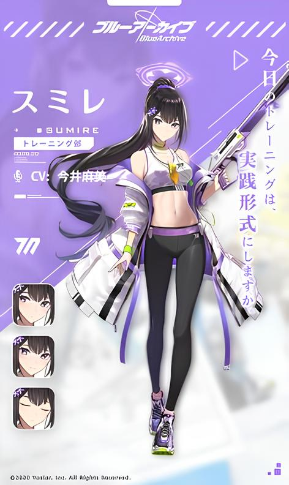
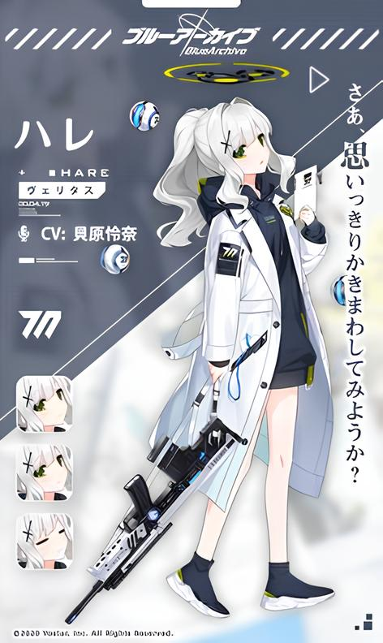
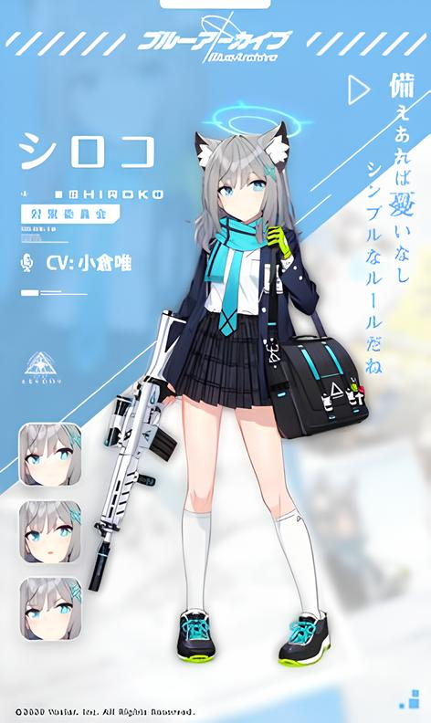

Dibawa oleh Izayoi Nonomi, diberi nama "Little Machine Gun V". Catatan: Senjata tersebut tampaknya berasal dari magasin kotak berdasarkan yang digunakan oleh M249, dan sebagian besar memiliki skema cat putih.
Digunakan oleh Shiroko yang diberi nama "WHITE FANG 465". Ini dimodifikasi untuk menembakkan otomatis penuh, dan dilengkapi dengan handguard fiksi (yang tampaknya merupakan gabungan dari handguard Klasik dan handguard Magpul MOE), SUSAT L9A1 Telescopic Sight, Knight's Armament Forward Pistol Grip dan SIG-Sauer SRD 556 QD penindas.
Digunakan oleh Rikuhachima Aru, yang diberi nama "Wine Red • Admire". Ini memiliki skema warna merah marun dengan highlight emas, hiasan bunga di kedua sisi penerima dan ikat pinggang di pelindung tangan.
Takanashi Hoshino menggunakan senapan Taktis Beretta 1301 yang sebagian besar berwarna putih , yang diberi nama "Eye of Horus". Ia memiliki laras 21" dari model Comp, Kit Ekstensi Nordic MXT +3, Mesa Tactical Urbino Pistol Grip Stock + Riser (buttpad tampaknya tidak didasarkan pada pantat tertentu yang mereka buat untuk stok 1301), Mesa Tactical SureShell Aluminium Carrier And Rail.
Igusa Haruka menggunakan shotgun Fabarm SDASS custom yang diberi nama "Blow Away". Ini dimodifikasi dengan paku fiksi di atas laras, ujung depan dan stok ungu, baut berlapis TiN, dan optik yang agak menyerupai Leupold Freedom Red Dot Sight berduri tanpa kenop penyesuaian ketinggian.